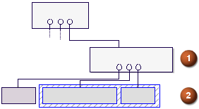

如果装配组件已经有重量属性缓存(来自单个部件级别已经完成的重量计算)，那么组件数据将在装配内所有其它组件的总和中起作用。
重量计算可以在装配级别中运行
重量计算可以轮流在组件中运行，而不需要以前的计算
带缓存的组件计算是装配计算的总和。
当一个带计算重量属性的组件部件(随部件储存)被关闭或保存，那些属性将储存在部件的组件和所属的装配中。
如果子装配在执行重量分析后保存，重量数据会随子装配被缓存，而不是它的组件。
在下图中，顶层装配包含一个子装配，编号为1，以及一个组件部件，编号为2，如果装配被保存，重量属性会随着工作部件被缓存，而不是随组件部件。
